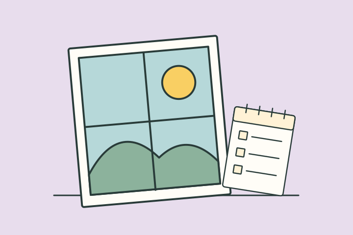

나의 결과는?
여백 넉넉형
예상 밖의 일도 잠깐 구경할 공간이 남은 상태이런 타입이에요
요즘의 당신은 일정과 감정 사이에 작은 빈칸이 꽤 남아 있어요. 갑작스러운 변화가 와도 바로 밀려나기보다 한 번 보고 고를 수 있는 여유가 있어요.
이런 순간, 나답죠
갑작스러운 제안이 들어와도 일단 일정과 마음을 살펴볼 틈이 있어요. 쉬는 시간에 다음 할 일보다 해보고 싶은 것이 먼저 떠오르는 편이에요.
- 기다림을 크게 불편해하지 않음
- 예정 밖 재미를 받아들일 수 있음
- 일상 속 감각이 비교적 또렷함
놓치기 쉬운 부분
빈칸이 있다는 이유만으로 모두 채워야 하는 것은 아니에요. 지금의 여유가 유지되는 데 무엇을 하지 않은 덕도 있는지 돌아보세요.
오늘 해볼 한 가지
이번 주 비어 있는 시간 하나는 새 일정으로 바꾸지 않고 그대로 남겨보세요.
여유 키워드
빈칸느린 식사예정 밖 재미기다림을 크게예정 밖
다른 타입과 나란히 보면
재미로 보는 성향 콘텐츠예요. 전문적인 심리 검사나 진단이 아니며, 타입 간 관계도 비교를 위한 이야기예요.
답변별 0~3점의 합계로 나눠요. 0~6점은 여백 실종형, 7~12점은 빽빽 일정형, 13~18점은 숨통 한 칸형, 19~24점은 여백 넉넉형이에요. 점수는 건강이나 능력의 등급이 아니에요.
읽어봤다면, 친구와 비교해볼까요?
다음 테스트도 이어서 보기
 직장인 회복력 체크
직장인 회복력 체크